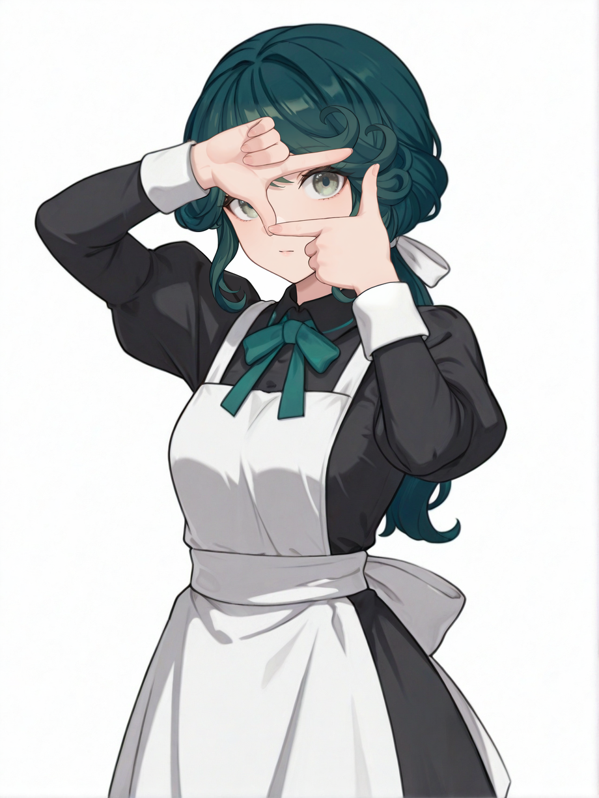
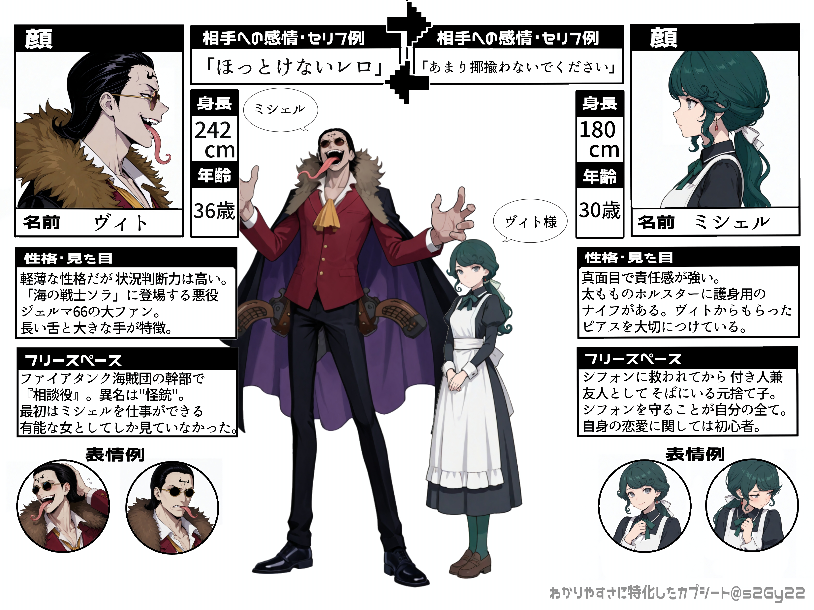

DC
神足 一(こうたり はじめ)
「最近、京都で変な事件起きんの多いなぁ……なんか死神でもいるんやろか」「服部くんは男前やし、紅葉が惚れんのも当然やなぁって思っただけや」
《基本設定》
性別：男
年齢：17歳
身長：170cm
髪型：ポニーテール
髪色：黒
瞳の色：黒
ICV：三宅貴大さん
お相手：大岡紅葉(CP表記は はじもみ)
Ｌ紅葉⇔一
一人称：僕
二人称：君
家族構成：父、母、兄、弟
好き・得意：剣道、和装
苦手・不得意：
イメソン：未定
【概要】
京都泉心高校２年生で 剣道部に所属している。沖田とは親友で よく色々なところに連れ回されては巻き込まれている。表向きは穏やかで柔らかい物腰だが、内に秘めた感情は強い。 剣道の実力は沖田に並ぶほどで 団体戦では主力メンバーであるが、どちらかと言えば 剣道形の演武を得意としている。剣道の腕は父親譲り。父親が婿養子に入ったため 母方の「神足」姓だが、父方の姓が「斎藤」であることから 影では沖田とともに『泉心の新撰組コンビ』と呼ばれている。鬼丸とは顔見知り。【紅葉との関係】
大岡家御用達の呉服屋の次男で、紅葉とは幼馴染。幼少期から紅葉にずっと想いを寄せているが、その気持ちを表に出すことはない。紅葉が平次を好きなことも知っており、表向きには応援している。しかし、平次と和葉が両想いであることも理解しており、紅葉の叶わぬ想いを見守る立場を選ぶ。密かに「紅葉と一緒の墓に入りたい」と願うなど、愛は静かで重い。【原作での動き】
から紅の恋歌
紅葉の応援として、百人一首の大会に行く。イラスト：

